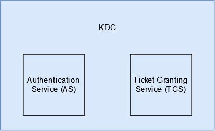
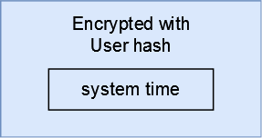
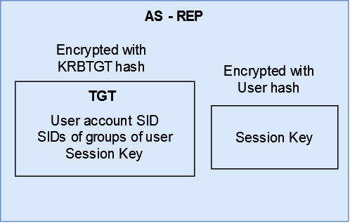
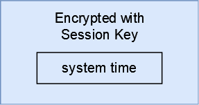

Introduction to Kerberos
Hi and welcome to the second post in the Active Directory series. In this post, we will start off with what kerberos even is and then dive in to understand how the authentication work. With that said, let’s get started.
What is Kerberos?
Kerberos is a network authentication protocol, first developed by the folks at MIT and was later adopted by Microsoft to incorporate it as their default authentication method. Although Microsoft uses Kerberos, but it no longer uses the MIT version of it, they themselves update and improve the protocol as per their own needs.
Kerberos works on the principle of shared secret and on the basis of tickets between the client and the server such that even in an insecure network the authentication takes place securely, we will soon get into how does that happen.
As mentioned above, Kerberos authentication is the default authentication protocol used but only when both the client and the server are in a domain. If either of them are not in the domain, then the authentication protocol used is the NTLM authentication mechanism.
How Does Kerberos Authentication Work?
Key Terminologies
Before we get into the authentication process of it, let’s first take a look at some key terminologies:
-
DC : Domain Controller A DC is a server which is the top most node of any domain and is the one that allows the users in the environment to perform authentication via Kerberos.
-
KDC : Key Distribution Centre A KDC is a service which is a part of the DC which is what deals with the authentication process, validates the requests coming from the users/ clients and then providing tickets for the same.
-
TGT : Ticket Granting Ticket This is the initial ticket that is provided to the user/ client that enters the domain and if a successful authentication is performed. Having this ticket allows a user/ client to get more tickets (TGS), thus the name.
-
TGS : Ticket Granting Service This allows a user to request service tickets to access different services in the domain
Authentication Process
Kerberos authentication process can be divided into three parts - authenticating to the domain, requesting a service ticket, access a service

Authenticating to the Domain
Domain authentication consist of the first two steps displayed in the diagram above. This part of the process is handled by the Authentication Service (AS) of the KDC.

Whenever a user enter the domain and wants to log into the domain, the Kerberos authentication process will kick off. The user will start the process by taking its current system time and then encrypt the time with the hash of the user and send this to the KDC to request for a TGT. This is also known as authenticator or pre-auth data. This request is called AS-REQ.

As soon as the KDC receives this encrypted request, it looks up the copy of the users’ hash and tries to decrypt the authenticator. If it is successful then KDC checks the system time in the request and compares it against its’ own and if that time is within 5 minutes then it assumes that this is a legitimate request and from a legitimate user.
Once the request is validated successfully, KDC then returns two things in the response - a ticket called TGT (AS-REP), session key. The TGT consist of the SID of the user account, SIDs of the groups the user is a part of, as well as copy of the session key. The TGT is encrypted using the hash of the KDC (KRBTGT) and the session key is encrypted using the user hash.

Once the user receives these two items - TGT and encrypted session key, session key is decrypted by the user and both are stored in Local Security Authority (LSA) memory to be specific.
Note: LSA is an important component of Windows which handles logons and authentication and manages security policy around the same
Requesting Service Tickets
Now that the user has the TGT as well as the session key, it can go ahead and request for service tickets to access services in the domain. This consist of the third and the fourth step of the process.
Once the user knows which service it wants to access, it takes the servicePrincipalName (SPN) which is mapped to the service account (a user account or machine account) being used to provide the service in the domain. It takes the session key it had received previously, creates a new authenticator (encrypting the system time with the session key) and sends the request (TGS-REQ) to the KDC along with the TGT it had received.

The KDC decrypts the TGT it received, extracts the session key and then decrypts the authenticator and checks the system time against time present in the authenticator and then moves on to finding the service for which the SPN was sent. If it is able to find the service, it sends a service ticket back to the user (TGS-REP).
Note: The KDC does not validate any information in the TGT. As long as it is able to decrypt the TGT, it will assume it as a legitimate TGT.
This service ticket consist of the SID of the user that KDC takes from the TGT and a new session key. This is then encrypted using the hash of the service account. The user is also sent a copy of the session key along with this service ticket which is encrypted using the users hash.
Accessing the Service
Once the user receives these two pieces of information - service ticket and session key, it can move on to actually requesting the service to allow the user to access it.
Note: KDC does not bother itself with ACLs, anyone can request service tickets for any service in the forest. Services decide whether access should be given and to what extent
Again, both of them are stored in the LSA memory. The user in order to request access to the service, sends the service ticket along with an authenticator. The service decrypts the service ticket using it’s hash and then extracts the session key and decrypts the authenticator. If the decryption is successful the service believes that this was sent from the KDC and is considered valid.
The service then checks the account SID of the user who wants to access the service and then checks and decides whether the user has required privileges to access the service or not. If it does, then the service grants access to the user to the extent of users privileges. If not, then the service access request is denied.
Summary
To summarize, a domain joined user requests for TGT by encrypting the timestamp by its hash. If the KDC is able to decrypt the request, it will assume the ticket is fine and will send a TGT to the user which is encrypted using the KRBTGT hash.
Once the user receives the TGT, it can request KDC for a service ticket by sending the service name and the TGT. If KDC is able to decrypt the TGT it receieved, it assumes the ticket is fine and checks the service name in its database. If it finds a match, the KDC will send a service ticket encrypted by the hash of the service account.
The user then forwards this encrypted service ticket to the service and if the service is able to decrypt the ticket, it assumes the ticket is ok and grants or denies the access basis the account information in the service ticket.
Fin
Thank you for reading all the way through. If you have any suggestion, query, or found a mistake then please feel free to contact me.
Take care and keep hacking!